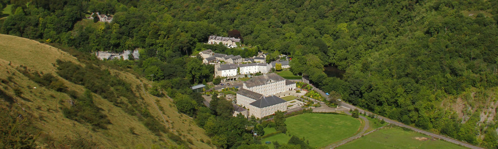
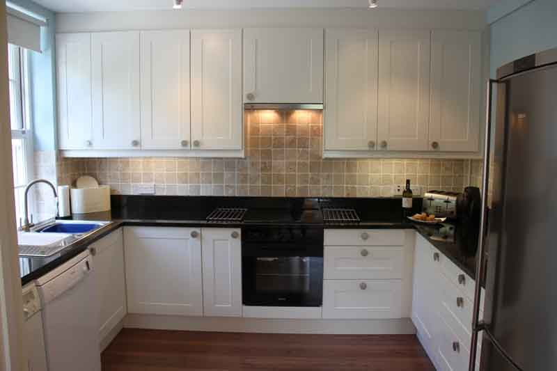
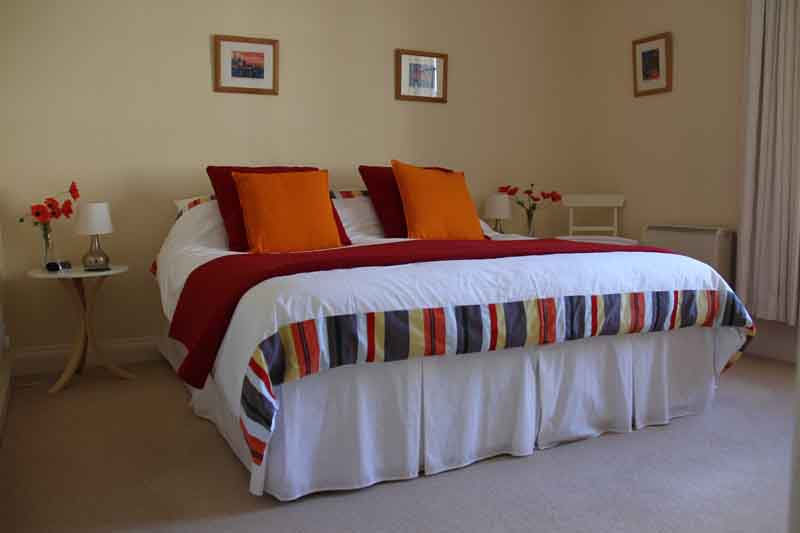
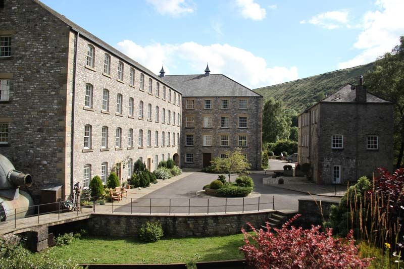
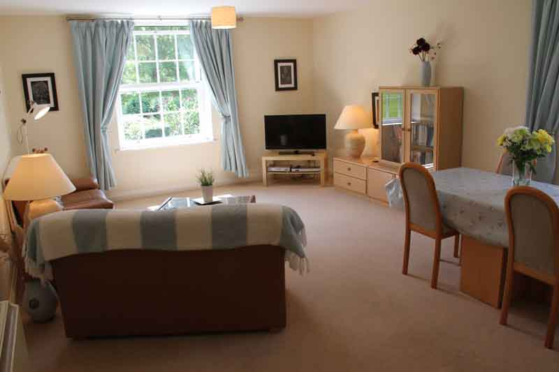

Brook Corner
Cressbrook Mill - Monsal Dale - Peak District

2 Bedroom Luxury Self Catering in Cressbrook
Set in stunning Monsal Dale and just 4 miles from Bakewell
Brook Corner is a spacious 2 bedroom self catering holiday apartment sleeping up to 4 adults at Cressbrook Mill, in the heart of the Peak District National Park. It is ideally situated between Bakewell and Buxton to visit the many attractions and enjoy the wide range of outdoor activities the Peak District has to offer.

Cressbrook Mill is a perfect location for a walking holiday, cycling and sight seeing in the Peak District. Set in the scenic Monsal Dale and next to the River Wye, it provides a tranquil base for your holiday.

Cressbrook Mill has been carefully converted into luxury apartments, so the apartment is light and spacious with both double glazing and modern insulation. It provides comfortable and contemporary alternative to holiday cottages, as is so easy to live with, particularly in the cold winter months.
As first floor apartment, it is easily accessible as there are three alternative ways in - by lift, up a single wide flight of stairs or via level access over the stone courtyard.
Communal grounds are available for guests to enjoy, including seating and an outdoor bowling green.